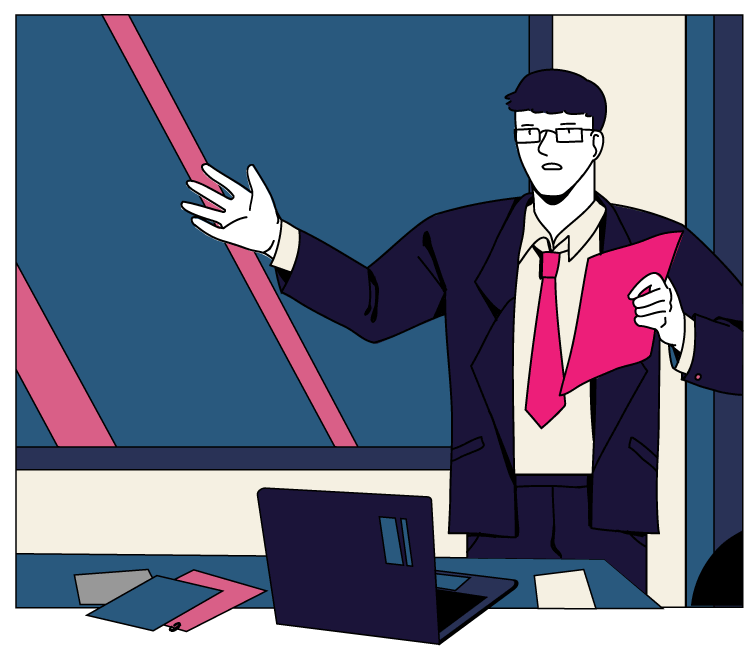
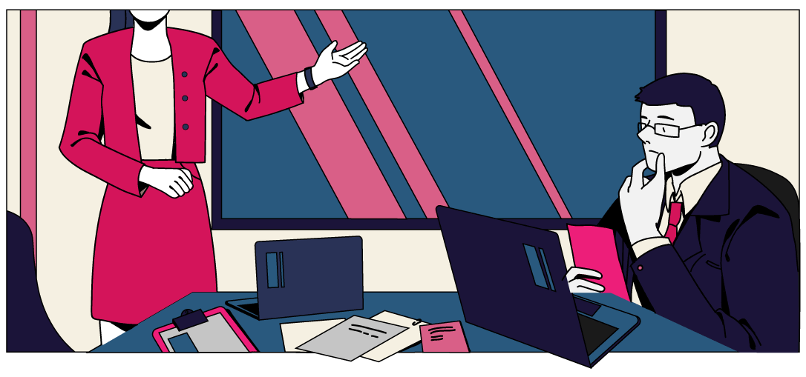
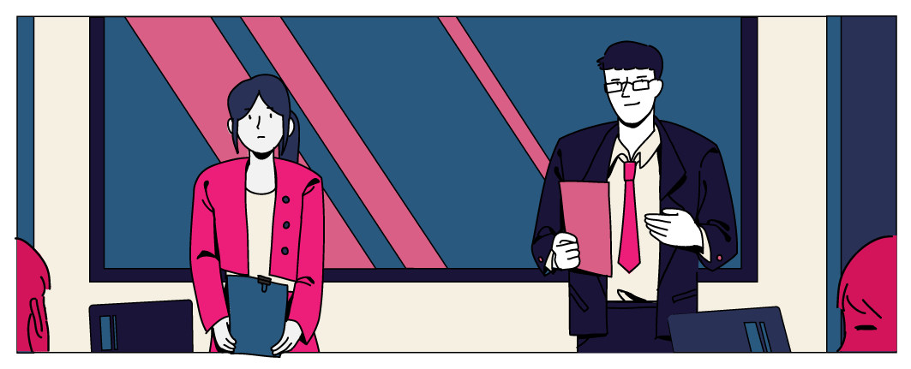
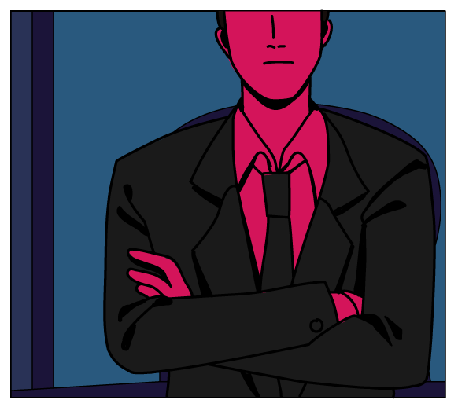

ฉันทำงานที่นี่มา 5 ปีแล้ว

คุณหัวหน้าหญิง
ฝากสอนงานน้องผู้หญิงด้วยนะ
งานเก่าที่ทำไหร่
ก็ไม่หมดซักที
งานเก่าที่ทำไหร่
ก็ไม่หมดซักที
งานเก่าที่ทำไหร่
ก็ไม่หมดซักที
งานเก่าที่ทำไหร่
ก็ไม่หมดซักที
ไหนจะต้องทำ OT
จนไม่มีเวลาพักผ่อน
แต่ตำแหน่งของฉันก็ยังอยู่ที่เดิม
Today, 10.30 AM
Presentation 👓🤮
วันนี้ฉันจะต้องนำเสนองาน
แข่งกับหัวหน้าทีมชาย
ถ้าทำได้สำเร็จ
ฉันคงมีผลงานเป็นตัวช่วย
ให้เลื่อนตำแหน่งได้

สวัสดีครับ ผมขอเริ่มด้วยข้อมูลที่มาของโปรเจคนี้คร่าว ๆ ก่อนนะครับ

ในส่วนของดิฉันนะคะ ดิฉันขอขยายความ เกี่ยวกับโปรเจคที่ดิฉันไปคิดและค้นคว้ามานะคะ
พวกผู้หญิงชอบใช้อารมณ์
ในการทำงาน ไม่มีตรรกะ
ถ้าหากทำงานผิดพลาดขึ้นมา
ก็ซวยกันหมดพอดี
คุณคิดว่าคุณจะไหวมั้ย ?
คุณหัวหน้าทีมชายมีประสบการณ์
มากกว่าคุณนะ

แล้วคุณคิดว่างานของคุณดีกว่า
หัวหน้าทีมชายตรงไหนหรอ ?

เหรอ งั้นผมขอเวลาตัดสินใจสักครู่
ไม่รู้ทำไม
ฉันถึงโดนตั้งคำถามมากมายขนาดนั้น
ฉันเพียงหวังว่าฉันจะได้รับโอกาสนั้นบ้าง
ยินดีด้วยนะครับ
หัวหน้าแผนกคนใหม่ของพวกเรา
แต่สุดท้าย
เขาก็เลือก 'ผู้ชาย'
เหมือนเดิม 'ทุกครั้ง'
ไม่ว่าฉันจะพยายามมากแค่ไหนก็ตาม
'อคติ'
ที่ผู้หญิงอาจะเจอในที่ทำงาน
คนอาจชอบผู้ชายที่หนักแน่น
และชอบผู้หญิงที่อ่อนหวาน
พอเจอผู้หญิงที่หนักแน่น
คนอาจชอบผู้หญิงคนนั้นน้อยลง
สำหรับงานบางประเภท คนอาจประเมิน
ความสามารถของผู้ชายสูงเกินไป
และผู้หญิงต่ำเกินไป
ส่งผลต่อการสมัครงาน
จากอคติว่าผู้หญิงไม่เก่งเท่าผู้ชาย
ดังนั้นเมื่อผู้หญิงทำงานสำเร็จ
เลยมีโอกาสโดนเพิกเฉยไม่เห็นคุณค่า
และโดนต่อว่ามากขึ้นเมื่อทำผิด
ผู้หญิงที่มีลูกอาจถูกมองว่า
ไม่พร้อมทุ่มเทกับการทำงาน
และไม่ได้รับโอกาสในการทำงานที่ท้าทาย
คนอาจชอบเพื่อนร่วมงาน
ที่คล้ายตัวเอง ไม่ว่าด้านเพศ
ภาพลักษณ์ นิสัย หรือภูมิหลัง
และหลีกเลี่ยงคนที่ต่างจากตัวเอง
ความแตกต่างด้านเชื้อชาติ ศาสนา
รสนิยมทางเพศ หรือความพิการ
อาจขัดขวางความสำเร็จของผู้หญิง
ยิ่งขึ้นไปอีก
ความเชื่อและอคติที่มีต่อผู้หญิงนั้น
ในปัจจุบันยังคงมีหลงเหลือให้เราได้เห็นกันอยู่
ทำให้ผู้หญิงต้องต่อสู้รับมือ
กับเหตุการณ์สองมาตรฐานในที่ทำงาน
แล้วเราจะช่วยกันลดอคติที่เกิดขึ้นได้อย่างไร ?
นอกจากเราจะทำความเข้าใจต่อความอคตินี้
แล้วช่วยให้สิ่งนี้น้อยลงแล้ว
เราสามารถเริ่มได้จากการสังเกตตัวเองก่อน
ว่าเรามีอคติเหล่านี้หรือไม่ แล้วจึงบอกต่อคนรอบข้าง
อคติเหล่านี้สามารถเกิดได้กับทุกเพศ
และเป็นปัญหากับทุกเพศเช่นเดียวกัน
การช่วยกันแก้ปัญหาลดอคติในที่ทำงาน
จึงเป็นเรื่องของทุกคน
หากเราทุกคนช่วยกัน
ปัญหาเหล่านี้คงบรรเทาและลดลงได้ง่ายขึ้น
เพื่อเราทุกคนเอง